Documents a specific OpenClaw auth mode (trusted proxy / identity-aware proxy) that removes the need for a manual web-socket token and device pairing when the control plane already sits behind a proxy
Once the reverse proxy passes a trusted IP and a user header, OpenClaw can drop its own web-socket token and device pairing (ours).
“It's called an identity-aware proxy, something that came out of Google. Uh essentially, you've got an identity provider, a policy engine, and a reverse proxy”
said at 02:06“there's trusted proxies. And this is essentially the proxy that is gating access to the control plane, the uh the gateway”
said at 04:13“that just meant no more token for web socket connections and no longer needed to pair devices”
said at 04:44“the original PR was closed cuz it was stale. And like literally after 2 weeks, it went from like 1500 to like almost 16,000”
said at 06:19“I had it on Telegram initially, but they don't actually uh uh their their uh channels aren't encrypted. So, like all the stuff's in clear”
said at 06:51“I built out something called Claw Space. And you know, doesn't doesn't mean you need to use it. It's just, you know, it's the age of personal software”
said at 07:52“editing live from my workspace the MCP and and to explain how this is working, uh we have the trusted proxy off mode. Uh I happen to be using pomerium in this case”
said at 12:02“Again, you never know when a gentic finishes. Okay, it's deterministic and it's deterministically an indeterminate”
said at 13:03The core lesson generalizes past OpenClaw: any agent control plane fronted by a proxy that already authenticates the user is carrying a second, weaker auth layer unless it explicitly trusts the proxy -- worth auditing other self-hosted agent tools for the same redundant-token pattern (ours).
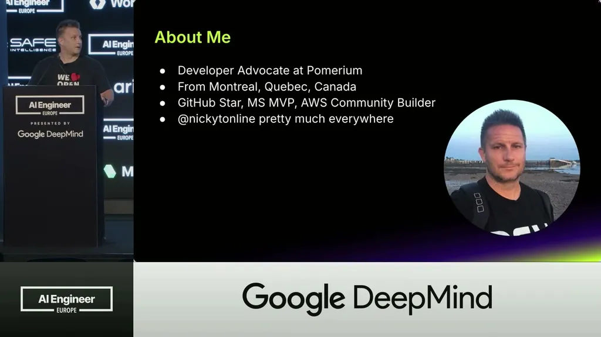
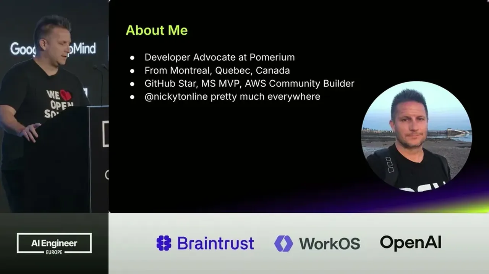
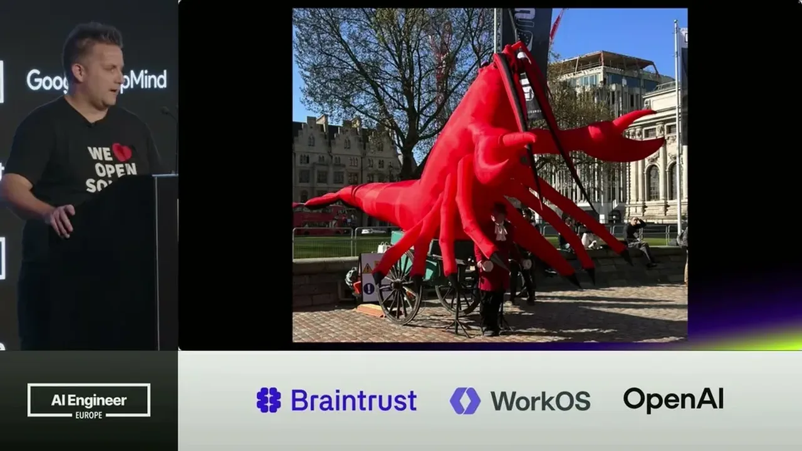
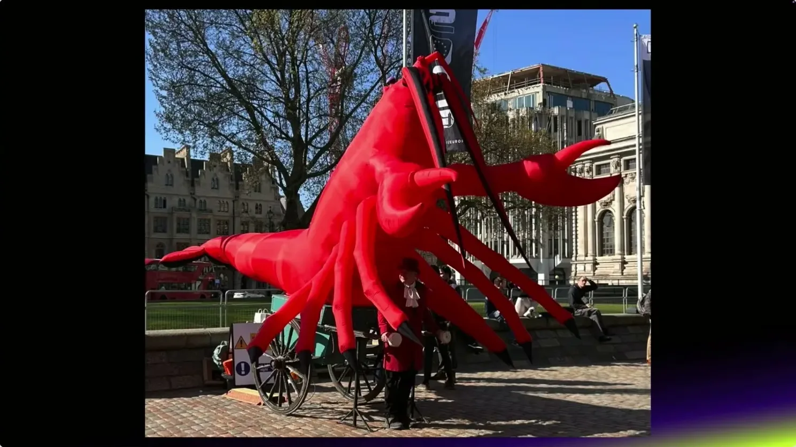
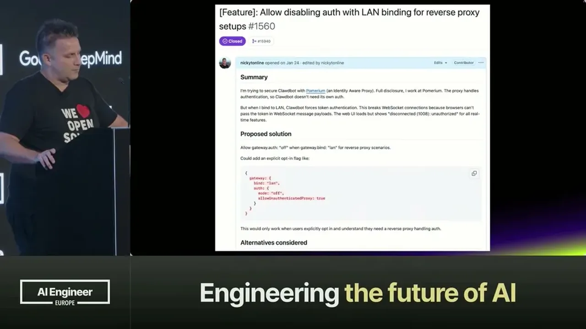
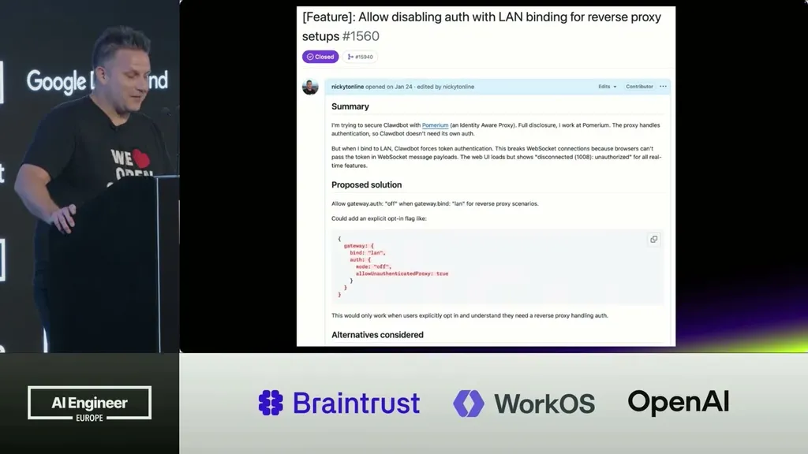
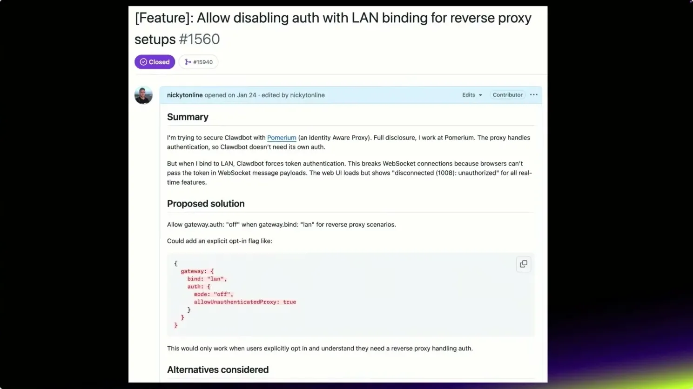
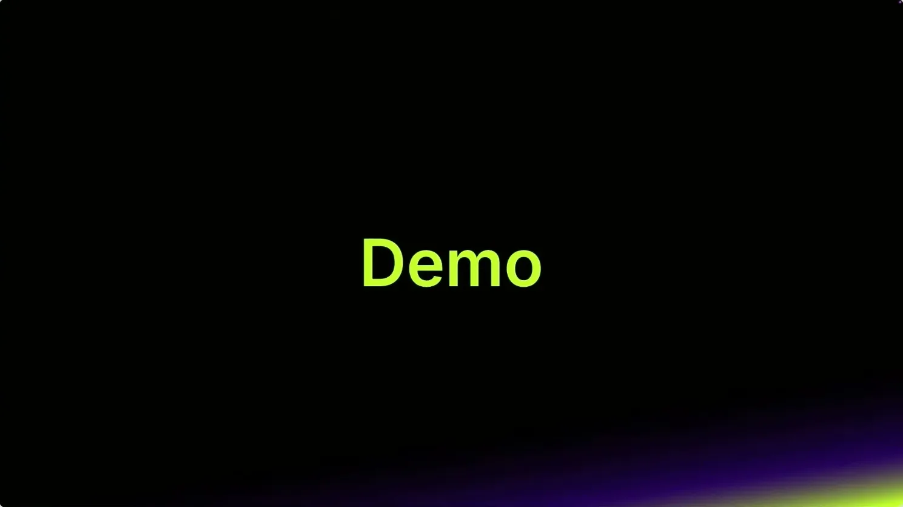
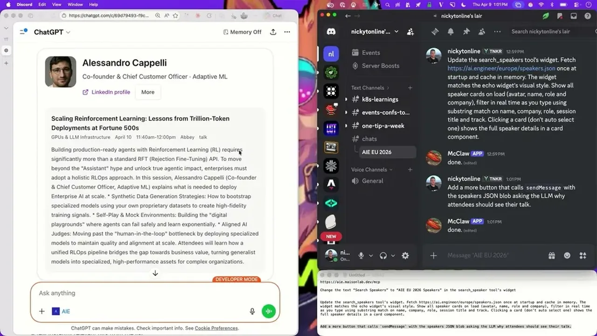
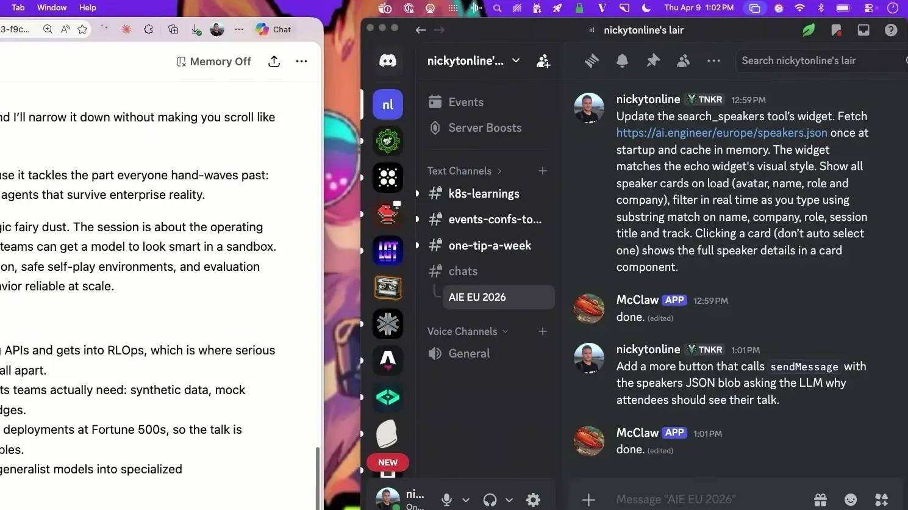
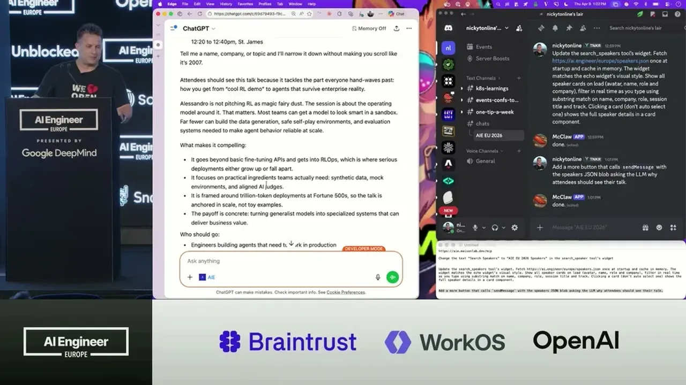
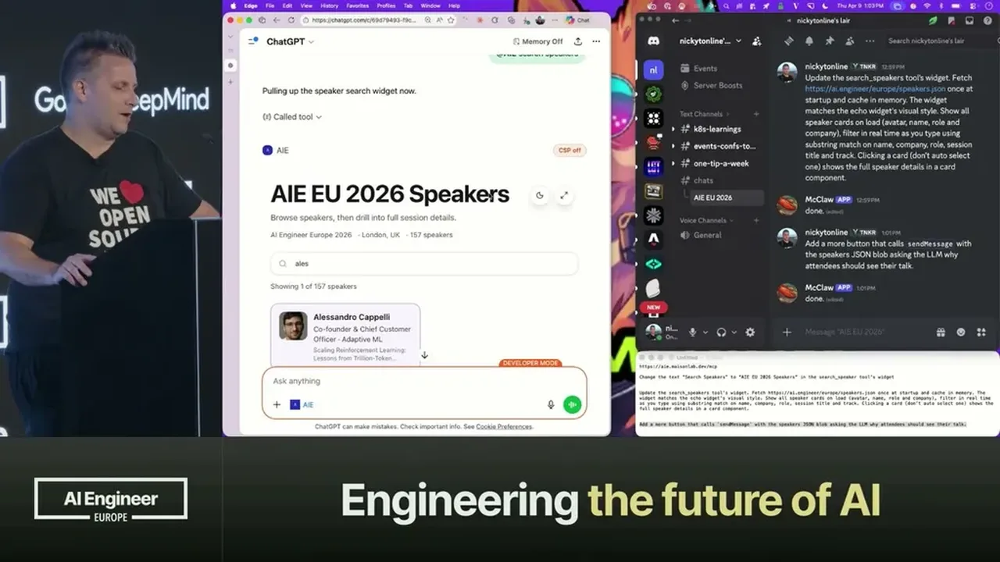
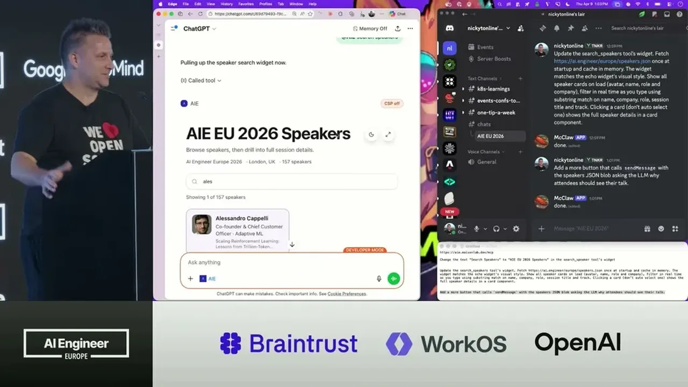
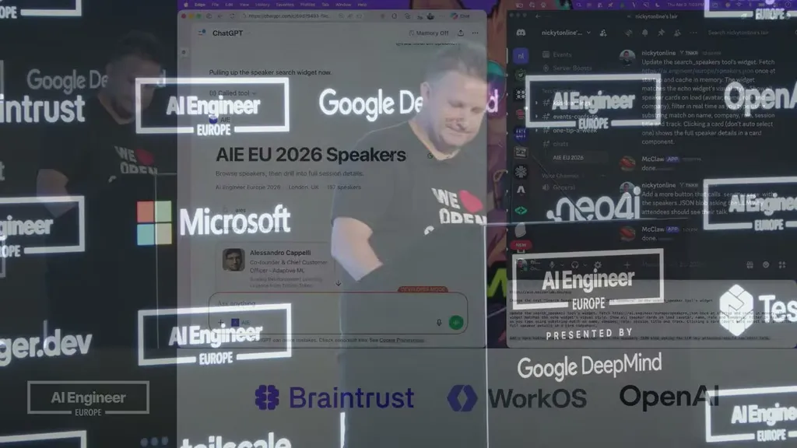
| Stance | Claim | t |
|---|---|---|
| asserts | An identity-aware proxy, the model Pomerium's Open Core implements (comparable to GCP's IAP), combines an identity provider, a policy engine, and a reverse proxy. | 02:06 |
| asserts | The trusted proxy auth mode means no more web-socket auth token and no longer needing to pair devices. | 04:44 |
| asserts | The trusted proxy config adds a trusted-proxies field naming the IP addresses of the proxy gating access to the control plane/gateway. | 04:13 |
| asserts | OpenClaw's issue/PR numbering jumped from about 1,500 to almost 16,000 in roughly two weeks. | 06:19 |
| warns | Telegram channels aren't encrypted, so OpenClaw data sent over Telegram is in clear text, which led him to avoid it for work use. | 06:51 |
| asserts | He built a personal tool called Claw Space for editing workspace files without SSHing in, after the trusted proxy mode shipped. | 07:52 |
| asserts | He demoed editing an MCP server's UI live inside ChatGPT from his phone, using OpenClaw's trusted proxy mode with Pomerium to expose a gated public URL. | 12:02 |
| asserts | He jokes that you never know when an agentic task will finish, calling it deterministically indeterminate. | 13:03 |
Machine-readable copy embedded in this page (script#ontology) and in the corpus ontology.